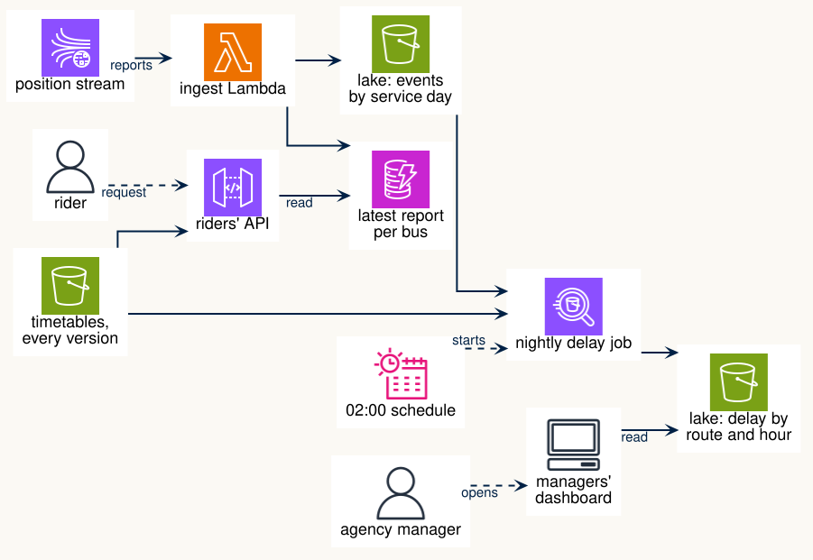

Proposal example: the transit case
This page shows a proposal for the transit case from the L8 studio, in its scaled-up form (Part 2), written by a team of 6. It covers all seven proposal sections. The studio case is a scenario, so where a real team would report what it found in its dataset, this example uses the scenario’s facts. Use the page as a model for the shape: your own case will have different users and different data.
1. Business case
A year after a city’s pilot, the provincial transit authority takes the bus-data system over for all 15 transit agencies in the province. The system keeps every bus’s position reports, compares them with each agency’s timetable, and answers questions about delay: for agency managers each morning, for planners over months, for a data scientist’s weekly arrival-time model, and for riders right now. The authority’s data team is four people. The budget ceiling is about $1,500 a month.
The data: position reports from about 4,000 buses on about 1,000 routes, every 30 seconds while a bus runs; each agency’s timetable, every version kept; and a live feed per agency of where its buses are now. Two years of records are kept.
2. Job stories
Example of use. At 07:00 a manager at one agency opens the dashboard. It shows that route 99 was on average 6 minutes late between 08:00 and 09:00 yesterday. Later, a rider at a stop on route 99 asks the app when the next bus arrives, and gets an answer within a second.
Most users are not technical. Managers and riders need to trust the numbers without seeing how they are made, so the dashboard says which timetable each comparison uses.
| Id | User | Job story |
|---|---|---|
| JS01 | Route planner | When I review a route for next season’s timetable, I want each trip’s running time on that route month by month over the last 6 months, in seconds, so that I can tell whether the timetable allows enough time. |
| JS02 | Data scientist | When I retrain the arrival-time model on Monday morning, I want the training table for the past year ready by 06:00, so that the app’s predictions use last week’s data. |
| JS03 | Rider | When I am at a stop and the bus is not in sight, I want to know within a second when the next bus arrives, so that I can decide whether to wait or walk. |
| JS04 | Finance | When nobody is asking questions at night, I want the system to cost close to nothing, so that the monthly bill stays under the ceiling. |
| JS05 | Agency manager | When I start the day at 07:00, I want yesterday’s average delay for every route and hour, compared with the timetable in force yesterday, so that I can raise the worst routes at the morning meeting. |
We want to focus on the rider and the agency manager. For the rider, we focus on operational needs and performance (JS03). For the agency manager, we focus on analytical needs (JS05).
3. Project shape and extensions
Shape: operational first. The rider’s question is the one that must not fail: an answer within a second, from the current position of every bus, under rush-hour load. The API over DynamoDB comes first. The lake keeps the history for managers and planners, and comes second.
2-point extension: streaming ingestion. Position reports go from the live stream into DynamoDB and the lake as they arrive, instead of in batches. With batches every 5 minutes, an expected arrival could rest on a report up to 5 minutes old. JS03 needs the report from the last 30 seconds.
1-point extension, because we are a team of 6: CI test matrix. The behave checks and our own tests run in continuous integration over two data sizes (one agency, and all 15) and with the stream’s faults on and off. Each pull request then shows whether the riders’ API still answers correctly when reports arrive late or twice.
4. Data and workflows
Subset. All 15 agencies, the last two years of position reports, and every timetable version in force in those two years. That is about 8.6 million reports a day (4,000 buses, one report every 30 s, 18 service hours, our estimate), so about 6 billion over two years. We measure the size in GB once we load one month.
What we found in the data. Each report holds the bus, its route and trip, its next stop, a sequence number, the time it was recorded, and how far behind the timetable the bus is. A report every 30 seconds per bus makes the positions stream the largest by far. The timetables change only every few weeks. Some reports arrive late, because a bus with no signal sends them when it reaches the depot. Some arrive twice. The sequence number tells the two apart. We estimate that 2% of reports arrive late and 1% arrive twice.
Constraints we chose. The rider gets an answer within 1 second. The managers’ table is ready by 07:00. A simulated run covers a weekday morning rush, one hour. A late report counts for yesterday if it arrives before 02:00.
Workflows. We chose operational first, so the rider’s workflow (JS03) comes first. Reports arrive on the stream. A Lambda keeps each bus’s latest report in DynamoDB, keyed by route and bus, and ignores a report older than the one it holds. For a stop, the riders’ API finds the routes and scheduled times at that stop in the current timetable, also in DynamoDB, and adds each bus’s current delay to get the expected arrival.
The manager’s workflow (JS05) branches off the same stream. The Lambda also appends every report to the lake’s events table, partitioned by service day. A nightly job at 02:00 joins yesterday’s reports with the timetable in force yesterday and writes the average delay by route and hour. The managers’ dashboard reads that table. We expect the stream and the DynamoDB writes to cost the most, because they run all day.
5. Architecture sketch

The sketch is drawn in PlantUML. Its source is docs/architecture-sketch.example.puml in the course files; copy it as a start for yours.
6. Experiments
experiments/ingest-batching.md: write each report to DynamoDB as it arrives, or batch each bus’s reports every 30 seconds. OEC: cost per day. Guardrail: the rider’s answer within 1 second.experiments/events-layout.md: partitioneventsby service day, or by agency and service day. OEC: data scanned by the nightly job. Guardrail: the table ready by 07:00.experiments/stop-lookup.md: find a stop’s buses through the timetable, or keep a copy of each bus’s report under the stops it serves. OEC: median API latency. Guardrail: cost per day.
7. User interaction points
- Riders’ API, documented in the repository:
GET /stops/{stop_id}/next: the next bus on each route at that stop, its expected arrival, and the time of the report it is based on.GET /routes/{route_id}/buses: every bus on the route now, with its delay.
- Managers’ dashboard, a thin page: one table per agency, routes by hour of yesterday, each cell the average delay in minutes. A note under the table names the timetable version it compares with.